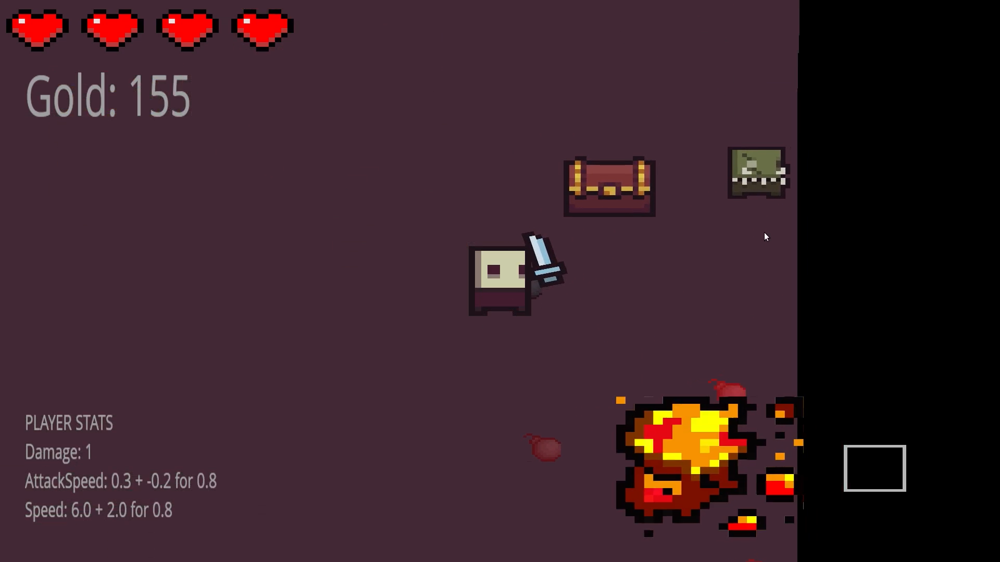

Hier kan je een combinatie van mijn vrije tijd projecten en school projecten vinden.
Weer applicatie
Voor een schoolproject moesten we een applicatie maken die data weergeeft van heel veel verschillende weerstationen voor Japanse onderzoekers.
Het doel van dit project is om te leren over multithreading en networking. Er zijn namelijk 8000 verschillende weerstationen die elke seconde data sturen naar je applicatie die je vervolgens moet verwerken. Daarnaast moest de data opgeslagen worden en netjes worden weergegeven op een website.
Datum: 2021
Het doel van dit project is om te leren over multithreading en networking. Er zijn namelijk 8000 verschillende weerstationen die elke seconde data sturen naar je applicatie die je vervolgens moet verwerken. Daarnaast moest de data opgeslagen worden en netjes worden weergegeven op een website.
Datum: 2021

Zonnescherm project
Voor een schoolproject dat ging over embedded systems moesten we met een Arduino een zonnescherm simuleren.
Deze zonnescherm kan je besturen via een Python applicatie die we hebben gemaakt. In deze applicatie kan je dingen instellen zoals hoever het zonnescherm moet in- of uitrollen. Je kan ook de zonnescherm automatisch laten in- of uitrollen bij een bepaalde temperatuur of lichtintensiteit.
Ook kan je meerdere zonnescherm tegelijk verbinden met de applicatie.
Datum: 2020
Deze zonnescherm kan je besturen via een Python applicatie die we hebben gemaakt. In deze applicatie kan je dingen instellen zoals hoever het zonnescherm moet in- of uitrollen. Je kan ook de zonnescherm automatisch laten in- of uitrollen bij een bepaalde temperatuur of lichtintensiteit.
Ook kan je meerdere zonnescherm tegelijk verbinden met de applicatie.
Datum: 2020

Gastles game-design
Ik heb een gastles gegeven samen met een klasgenoot over game-design aan groep 7 & 8 van OBS de Waterlelie.
We hebben een presentatie gegeven over hoe het is om een game-developer te zijn. Wat is leuk en wat is minder leuk? etc..
Ik heb ter voorbereiding twee games gemaakt in Scratch om te demonstreren die ze zelf ook nog even konden spelen. Een van deze games was Flappy Bird met microfoon. Je kan dus Flappy Bird spelen en als je 'FLAP!' roept in de microfoon gaat Flappy Bird vliegen. Daarna hebben we het spel ontleed en hebben we gekeken welke stappen je moet nemen om het spel werkend te krijgen. Ook hebben we nog gepraat over brainstorm technieken en vervolgens zijn de kinderen zelf gaan brainstormen over het maken van een game. Als laatste mochten de kinderen zelf aan de slag met Scratch.
Datum: 2020
We hebben een presentatie gegeven over hoe het is om een game-developer te zijn. Wat is leuk en wat is minder leuk? etc..
Ik heb ter voorbereiding twee games gemaakt in Scratch om te demonstreren die ze zelf ook nog even konden spelen. Een van deze games was Flappy Bird met microfoon. Je kan dus Flappy Bird spelen en als je 'FLAP!' roept in de microfoon gaat Flappy Bird vliegen. Daarna hebben we het spel ontleed en hebben we gekeken welke stappen je moet nemen om het spel werkend te krijgen. Ook hebben we nog gepraat over brainstorm technieken en vervolgens zijn de kinderen zelf gaan brainstormen over het maken van een game. Als laatste mochten de kinderen zelf aan de slag met Scratch.
Datum: 2020
Ocean Drive V2
Ocean Drive V2 is een Fivem-rollenspelserver die wordt ontwikkeld door een team dat bestaat uit een groot aantal getalenteerde mensen uit verschillende landen.
FiveM is een modificatie van Grand Theft Auto V waarmee je aangepaste multiplayer-servers kunt maken.
De dingen die ervoor zorgen dat onze server opvalt tussen de andere servers, is dat bijna alle scripts op maat worden gemaakt. Dit geeft ons volledige controle over wat er gebeurt en maakt het gemakkelijk om uit te breiden. Nieuwe functies kunnen makkelijk geïmplementeerd worden en de server is makkelijk te onderhouden, wat erg belangrijk voor ons is. Ook de community is erg belangrijk voor ons, want zonder hen zouden we dit niet doen. We luisteren aandachtig naar onze community en ontwikkelen scripts op basis van hun behoeften.
Ons doel is om de grootste rollenspelserver onder de Fivem-community te worden. We weten dat dit een zeer ambitieus doel is, maar ik denk dat het mogelijk is dankzij ons getalenteerde team.
Datum: 2020 & heden
FiveM is een modificatie van Grand Theft Auto V waarmee je aangepaste multiplayer-servers kunt maken.
De dingen die ervoor zorgen dat onze server opvalt tussen de andere servers, is dat bijna alle scripts op maat worden gemaakt. Dit geeft ons volledige controle over wat er gebeurt en maakt het gemakkelijk om uit te breiden. Nieuwe functies kunnen makkelijk geïmplementeerd worden en de server is makkelijk te onderhouden, wat erg belangrijk voor ons is. Ook de community is erg belangrijk voor ons, want zonder hen zouden we dit niet doen. We luisteren aandachtig naar onze community en ontwikkelen scripts op basis van hun behoeften.
Ons doel is om de grootste rollenspelserver onder de Fivem-community te worden. We weten dat dit een zeer ambitieus doel is, maar ik denk dat het mogelijk is dankzij ons getalenteerde team.
Datum: 2020 & heden

Leenfiets website
Leenfiets is een nepbedrijf dat ik met een paar klasgenoten heb verzonnen. Zoals de naam al doet vermoeden kun je fietsen lenen van particulieren via de website die wij hebben gemaakt.
De belangrijkste focus van dit project was om de basisprincipes van php en databases te leren en om te leren werken in een team met behulp van scrum.
Ook al is het niet de mooiste website, ben ik erg met het resultaat, omdat de website alle functionaliteit bevat om het hele leenproces te laten werken en meer.
Datum: 2019
De belangrijkste focus van dit project was om de basisprincipes van php en databases te leren en om te leren werken in een team met behulp van scrum.
Ook al is het niet de mooiste website, ben ik erg met het resultaat, omdat de website alle functionaliteit bevat om het hele leenproces te laten werken en meer.
Datum: 2019

Ray tracing
De afbeelding die je hiernaast ziet, is een afbeelding gemaakt door een raytracer die ik heb gemaakt voor een schoolproject. De afbeelding is gemaakt met alleen de CPU.
Het doel van dit project was om te leren over graphics, intersections, wiskunde, vectoren en matrices.
Voor mij was dit een behoorlijke uitdaging, aangezien het project vooral over wiskunde ging en ik niet zo ervaren ben in wiskunde. Ik wist al hoe ik met vectoren en matrices moest werken, maar ik moest mijn eigen wiskundebibliotheek programmeren en dat lukte. Ik heb unit testing gebruikt om te testen of mijn wiskundebibliotheek mij het juiste resultaat gaf.
Datum: 2019
Het doel van dit project was om te leren over graphics, intersections, wiskunde, vectoren en matrices.
Voor mij was dit een behoorlijke uitdaging, aangezien het project vooral over wiskunde ging en ik niet zo ervaren ben in wiskunde. Ik wist al hoe ik met vectoren en matrices moest werken, maar ik moest mijn eigen wiskundebibliotheek programmeren en dat lukte. Ik heb unit testing gebruikt om te testen of mijn wiskundebibliotheek mij het juiste resultaat gaf.
Datum: 2019

Gauntlet
Gauntlet is een tile based retro-spel dat ik heb nagemaakt voor een schoolproject.
School gaf mij een basis c++ framework dat behoorlijk traag was (ze maakten het expres traag), dus ik heb het geoptimaliseerd. Daarna hoefde ik alleen nog maar het spel te maken. Ik heb een tool genaamd Tiled gebruikt om levels te maken en ik laad de levels in met mijn eigen interpreter.
Alle sprites bevinden zich in een spritesheet en worden efficiënt weergegeven met behulp van een techniek die instancing wordt genoemd. Collisions worden gecontroleerd op basis van de tiles om je heen.
Datum: 2018
School gaf mij een basis c++ framework dat behoorlijk traag was (ze maakten het expres traag), dus ik heb het geoptimaliseerd. Daarna hoefde ik alleen nog maar het spel te maken. Ik heb een tool genaamd Tiled gebruikt om levels te maken en ik laad de levels in met mijn eigen interpreter.
Alle sprites bevinden zich in een spritesheet en worden efficiënt weergegeven met behulp van een techniek die instancing wordt genoemd. Collisions worden gecontroleerd op basis van de tiles om je heen.
Datum: 2018

Galaxians
Galaxians is een retro-game die ik heb nagemaakt voor een schoolproject.
De uitdaging van dit project was om de AI zich zoveel mogelijk als de origineel AI te laten gedragen.
Elke alien gedraagt zich anders. Ze hebben allemaal een unieke beweging en gaan ook anders bewegen als een aantal van hun bondgenoten ten onder gaan. Ze zullen bijvoorbeeld met meer tegelijk bewegen of groeperen en aanvallen.
Datum: 2018
De uitdaging van dit project was om de AI zich zoveel mogelijk als de origineel AI te laten gedragen.
Elke alien gedraagt zich anders. Ze hebben allemaal een unieke beweging en gaan ook anders bewegen als een aantal van hun bondgenoten ten onder gaan. Ze zullen bijvoorbeeld met meer tegelijk bewegen of groeperen en aanvallen.
Datum: 2018

Electric vehicle game
Electric vehicle game is een spel dat ik samen met een artist van mijn school heb gemaakt tijdens mijn stage bij Capteur. Veel mensen bij Capteur rijden elektrisch en daar kwam het idee van dit spel vandaan.
Het doel van het spel is om een gemiddeld elektrisch voertuig in verschillende weersomstandigheden te simuleren om de prestaties van de batterij te laten zien, maar belangrijker is dat elektrisch rijden beter is voor het milieu. Deze game laat zien hoeveel beter het is voor het milieu in vergelijking met een dieselauto.
De game is gemaakt in Unity met c# en de game kan zowel op Android- als IOS-telefoons worden gespeeld.
Datum: 2018
Het doel van het spel is om een gemiddeld elektrisch voertuig in verschillende weersomstandigheden te simuleren om de prestaties van de batterij te laten zien, maar belangrijker is dat elektrisch rijden beter is voor het milieu. Deze game laat zien hoeveel beter het is voor het milieu in vergelijking met een dieselauto.
De game is gemaakt in Unity met c# en de game kan zowel op Android- als IOS-telefoons worden gespeeld.
Datum: 2018

Training Sales Person Application
Training Sales Person Application is een applicatie die ik samen met een artist van mijn school heb gemaakt tijdens mijn stage bij Capteur.
De applicatie is gemaakt om verkoopmedewerkers te leren over hun producten en hoe ze kunnen reageren op vragen van klanten over die producten.
De applicatie is gemaakt in Unity met c#. We hebben ook gebruik gemaakt van de cognitieve diensten van Azures om de AI (klant) zo slim mogelijk te maken en het gesprek met de klant realistischer te laten aanvoelen.
Datum: 2018
De applicatie is gemaakt om verkoopmedewerkers te leren over hun producten en hoe ze kunnen reageren op vragen van klanten over die producten.
De applicatie is gemaakt in Unity met c#. We hebben ook gebruik gemaakt van de cognitieve diensten van Azures om de AI (klant) zo slim mogelijk te maken en het gesprek met de klant realistischer te laten aanvoelen.
Datum: 2018
Staff of the Chaos Temple
Staff of the Chaos Temple is een game die ik heb gemaakt als intake-opdracht voor de BUAS / NHTV. Als intake-opdracht moest je een game programmeren met c++ / openGL.
Het hoofdonderwerp van het spel moest over reflectie gaan. Dus ik bedacht dit puzzel / actiespel waarin je vijanden moet bevechten en kristallen moet oplichten om deuren te openen.
Je hebt kristallen in een kamer die geactiveerd kunnen worden met je staf die een laser afschiet. Als je alle kristallen tegelijk activeert met je staf gaat er een deur open die verbonden is met die kristallen. Je kunt de spiegels gebruiken om de laser van je staf te laten reflecteren, zodat je meerdere kristallen tegelijk kunt raken.
Levels kunnen worden gemaakt met de levelmaker die ik ook heb gemaakt.
Datum: 2018
Het hoofdonderwerp van het spel moest over reflectie gaan. Dus ik bedacht dit puzzel / actiespel waarin je vijanden moet bevechten en kristallen moet oplichten om deuren te openen.
Je hebt kristallen in een kamer die geactiveerd kunnen worden met je staf die een laser afschiet. Als je alle kristallen tegelijk activeert met je staf gaat er een deur open die verbonden is met die kristallen. Je kunt de spiegels gebruiken om de laser van je staf te laten reflecteren, zodat je meerdere kristallen tegelijk kunt raken.
Levels kunnen worden gemaakt met de levelmaker die ik ook heb gemaakt.
Datum: 2018

The Restless Tombs
The Restless Tombs is een spel dat ik heb gemaakt omdat ik wilde leren over OpenGL, game-engines / frameworks en ook wilde ik beter worden in c ++.
De focus van dit project was om te leren hoe je dingen kunt renderen met OpenGL. Om dit te leren heb ik learnopengl.com als mijn belangrijkste bron gebruikt. Ik had ook een boek gelezen genaamd 'game engine architecture second edition' en keek naar video's van TheCherno op youtube. Met al dit leermateriaal kon ik mijn eigen 2D-gameframework maken met c++ en OpenGL.
Datum: 2017
De focus van dit project was om te leren hoe je dingen kunt renderen met OpenGL. Om dit te leren heb ik learnopengl.com als mijn belangrijkste bron gebruikt. Ik had ook een boek gelezen genaamd 'game engine architecture second edition' en keek naar video's van TheCherno op youtube. Met al dit leermateriaal kon ik mijn eigen 2D-gameframework maken met c++ en OpenGL.
Datum: 2017

Vikings Rush
Vikings Rush is een van mijn eerste games die ik ooit heb gemaakt. Dit heb ik gedaan met behulp van AS3/flash, deze software en programmeertaal zijn inmiddels verouderd.
Deze game heb ik gemaakt voor een school project die ging over OOP en vector math. Dit was de eerste keer dat ik OOP en vectors gebruikte maar hierdoor heb ik wel de basis geleerd van game-development en programmeren.
De game is een tower defence game, dus je moet torens plaatsen en die torens zullen proberen de vijanden te stoppen door op ze te schieten. In de laatste golf van vijanden zal een baas verschijnen.
Date: 2016
Deze game heb ik gemaakt voor een school project die ging over OOP en vector math. Dit was de eerste keer dat ik OOP en vectors gebruikte maar hierdoor heb ik wel de basis geleerd van game-development en programmeren.
De game is een tower defence game, dus je moet torens plaatsen en die torens zullen proberen de vijanden te stoppen door op ze te schieten. In de laatste golf van vijanden zal een baas verschijnen.
Date: 2016